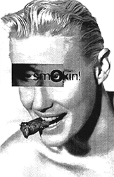

<html>
<head>
<title>. . .mcjones. . .</title>
</head>

<body bgcolor="#ffffff" text="#352015" link="#001070" vlink="#8F8FBD" alink="#dddddd">

<p align=right>
<font size=1>
__<a href="../../ele_mental.html">home</a>
__<a href="../../new/">new</a>
__<a href="../../what.html">what</a>
__<a href="../">who</a>
__<a href="../../what.was/">what.was</a>
__<a href="../../what.will.be/">what.will.be</a>
__<a href="../../21/">21/22 corp</a>
__<a href="../../(23)/enter.(23).ld.html">(</a><a href="../../(23)/enter.(23).dl.html">2<a href="../../(23)/enter.(23).ld.html">3</a><a href="../../(23)/enter.(23).dl.html">)</a>
__<a href="../../ele_ment/">ele_ment</a>
__<a href="../../ele_ment/think./">think.</a>
__<a href="../../link.html">link</a>
</font></p>

<font size=2>
<br>

<br><br>

<center>

<table width=70%>
<tr><td>
<tt>
<font size=4><b>n u c l e u s::</b></font>
</td>
<td width=60%>

</td>
</tr>

<tr>
<td valign=top>
</td>
<td>
<tt>
<b>name::</b><br>

m. christopher jones<br><br>

<b>aliases::</b><br>

"chris," "litho," "m/c/jones," "gleek"<br>
<br>

<b>turntable specialties::</b><br>
minimal technotraxx, industrial ambient<br><br>

<b>production specialties::</b><br>
minimal traxx, abstract ambient<br><br>

<b>other specialties::</b><br>
graphic design and technical assistance
<br><br>

<br><br>
</td>
</tr>
</table>

<table width=70%>
<tr>
<td>
<tt>
<b>info::</b><br><br>

from the time chris jones first heard "blue monday" by <b>new order</b> in 1984 (thanks to his sister alyssa), he knew he was attracted to electronic sounds.  soon he found other pre- and proto-techno bands like <b>section 25</b>, <b>d.a.f.</b>, and <b>he said</b>, as well as industrial/atmospheric bands such as <b>einstürzende neubauten</b>, and <b>death in june</b>.  around 1986, chris began buying records like <b>cabaret voltaire</b>, <b>chris & cosey</b>, and <b>front 242</b>, and was further encouraged to buy records as a DJ on a campus radio station in massachusetts from 1987-89.  frequent trips to new york exposed him to the acid house explosion, and chris recalls a particularly memorable trip to DV8 in boston where there was a room of mysterious, minimal, non-vocal dance music...<br><br>

concurrent with his interest in technological music has been an interest in graphic design, especially the work of <b>vaughn oliver</b> and <b>neville brody</b>, which led him to take a prominent design job with the ohio state university's <b>wexner center for the arts</b>, a position he continues to hold today.<br><br>

in june of 1993, chris attended ele_mental's second event, entitled COMFORT, during which he became acquainted with <b>steven reaume</b>, a detroit native, who in turn showed chris the wealth of detroit techno which has had such an influence on today's dance music.  then, following the example of columbus' <b>body release</b> cru, chris began to amass the equipment necessary to create his own electronic music.  <br><br>

his early music was made at home and consisted of long, droning improvisations which seemed like an modern extension of <b>tangerine dream</b>.  slowly, chris accumulated both the equipment and the gear to start creating more cohesive musical structures, performing live at a small ele_mental house party in the spring of 1995, the 3rd ele_ment concert event, (Li): LITHIUM (march 1996), and most recently at the 8th ele_ment concert event (O): OXYGEN (may 1997).   he also finally wrote songs for <b>charles noel</b>'s 21/22 corporation, including one song called "gleek" (also his occasional DJ name) which appeared on the first "trace elements" vinyl compilation (sept 1996) and has attracted attention from artists such as <b>jay denham</b>, <b>rob hood</b>, <b>terry mullan</b> (who event put "gleek" on his first mix CD), and others.  <br><br>

his recent musical output has been rather quiet, but he has contributed to the design for "trace elements 3" as well as <b>t.j nagle</b>'s new label <b>residual</b>, and hopes to put together some tracks for an upcoming solo ep for the 21/22 corporation by mid-1998.
<br><br>

<td></tr>
</table>
</tt>
</center>

<br>
.
<br><br>
.
<br><br>
<a href="../../ele_mental.html">.</a>
<br><br>

<font size=1><a href="../../ele_mental.html">
<br>
home</a><br><br>

</font></font>

</body>
</html>